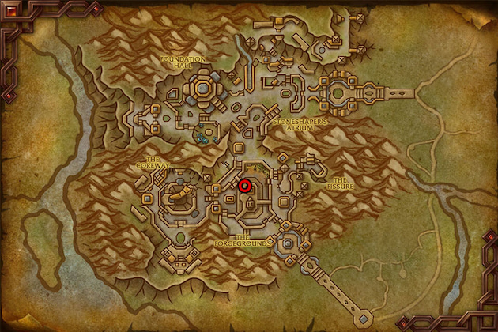
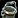

This War Within Engineering leveling guide will show you the fastest and easiest way how to level your War Within Engineering skill up from 1 to 100.
This War Within Engineering leveling guide will show you the fastest and easiest way how to level your War Within Engineering skill up from 1 to 100.
Engineering is the best combined with Mining, and I highly recommend to level Mining and Engineering together because you will need a lot of gold if you want to buy everything from the Auction House. Check out my Mining Leveling Guide if you're going to level Mining.
Table of contents
Engineering Trainers
You can learn the War Within Engineering skill from the Engineering trainer in Dornogal.

Shopping List
This is the total number of raw materials needed to reach 40. The 40-100 part is not included here because there are too many variables.
The quality doesn't matter for leveling. Buy the cheapest.
- 260x Bismuth
- 22x Aqirite
- 4x
 Crystalline Powder
Crystalline Powder
Leveling Khaz Algar Engineering
1 - 15
Use Scour Through Scrap until you reach 15.
Keep 30x Pile of Rusted Scrap.
Pile of Rusted Scrap drops from mobs and different activities around Khaz Algar, so you should have enough from just leveling. It's a key ingredient in almost all Engineering recipes and is also used for discovering new recipes. You'll need a substantial amount to unlock every Engineering recipe.
Alternative if you don't have Scrap
If you just picked up Engineering and have few or no Scraps, loot the Engineering treasure in Dornogal: Dornogal Spectacles. This will allow you to reach level 5 and learn Pilfer Through Parts.
After that, I recommend collecting every Engineering treasure to gather even more Scrap. Check out my separate guide on how to collect all treasures: All Profession Knowledge Treasures.
Collecting the Engineering treasures is highly recommended, but if you don't want to do it right now, here's what to do:
- 4x Scour Through Scrap
- Learn the Pilfer Through Parts from your trainer.
- Pilfer Through Parts works on parts from Older expansions and allows you to produce Pile of Rusted Scrap without farming mobs.
- Buy 275x
 Handful of Serevite Bolts from the Auction House and use Pilfer Through Parts on them. You will get 55x Pile of Rusted Scrap.
Handful of Serevite Bolts from the Auction House and use Pilfer Through Parts on them. You will get 55x Pile of Rusted Scrap. - Use Scour Through Scrap 5 times on 25 scrap.
- Keep 30x Pile of Rusted Scrap.
15 - 20
The Frayed Wiring and 
10x Whimsical Wiring - 10x Frayed Wiring, 30x Bismuth
10x Gyrating Gear - 10x Junk Bucket, 30x Bismuth, 10x Aqirite
45x Handful of Bismuth Bolts - 180x Bismuth
Keep these, you will need them. You will need a lot more, but you should probably craft them later.
20 - 25
1x  Bismuth Fueled Samophlange - 8x Handful of Bismuth Bolts, 2x Whimsical Wiring, 2x Gyrating Gear
Bismuth Fueled Samophlange - 8x Handful of Bismuth Bolts, 2x Whimsical Wiring, 2x Gyrating Gear
4x Safety Switch - 4x Crystalline Powder, 20x Bismuth, 12x Aqirite
Equip the  Bismuth Fueled Samophlange.
Bismuth Fueled Samophlange.
Engineering Specializations
When you hit 25, you will unlock Engineering specializations.
You'll eventually be able to learn all three specializations, so there's no need to worry about your initial choice. You'll need 50 skill points to unlock the second specialization and 75 for the third.
I suggest checking out my War Within Engineering Specialization Guide if you want some example builds to help you get started.
TWW Engineering Specialization Guide and Builds
25 - 33
Learn the remaining recipes from the trainer, then craft one item from each of the following to earn your first craft bonuses.
1x  4UT0-41M3R - 10x Pile of Rusted Scrap, 6x Handful of Bismuth Bolts, 1x Whimsical Wiring, 1x Gyrating Gear, 1x Safety Switch
4UT0-41M3R - 10x Pile of Rusted Scrap, 6x Handful of Bismuth Bolts, 1x Whimsical Wiring, 1x Gyrating Gear, 1x Safety Switch
1x  Tracker's Goggles - 5x Pile of Rusted Scrap, 4x Handful of Bismuth Bolts, 1x Whimsical Wiring, 1x Gyrating Gear
Tracker's Goggles - 5x Pile of Rusted Scrap, 4x Handful of Bismuth Bolts, 1x Whimsical Wiring, 1x Gyrating Gear
1x  Acolyte's Goggles - 5x Pile of Rusted Scrap, 4x Handful of Bismuth Bolts, 1x Whimsical Wiring, 1x Gyrating Gear
Acolyte's Goggles - 5x Pile of Rusted Scrap, 4x Handful of Bismuth Bolts, 1x Whimsical Wiring, 1x Gyrating Gear
1x  Spelunker's Goggles - 5x Pile of Rusted Scrap, 4x Handful of Bismuth Bolts, 1x Whimsical Wiring, 1x Gyrating Gear
Spelunker's Goggles - 5x Pile of Rusted Scrap, 4x Handful of Bismuth Bolts, 1x Whimsical Wiring, 1x Gyrating Gear
1x  Dredger's Goggles - 5x Pile of Rusted Scrap, 4x Handful of Bismuth Bolts, 1x Whimsical Wiring, 1x Gyrating Gear
Dredger's Goggles - 5x Pile of Rusted Scrap, 4x Handful of Bismuth Bolts, 1x Whimsical Wiring, 1x Gyrating Gear
33 - 40
If you've discovered any additional items through prototypes or other means, now's the time to start crafting them to earn those first craft bonuses. Craft those instead of the four Engineering tool.
4x  Bismuth Fueled Samophlange - 32x Handful of Bismuth Bolts, 8x Whimsical Wiring, 8x Gyrating Gear
Bismuth Fueled Samophlange - 32x Handful of Bismuth Bolts, 8x Whimsical Wiring, 8x Gyrating Gear
Inventing and Prototypes
Majority of the Engineering recipes are not taught by your trainer but can be learned through the new discovery system.
I'll walk you through the process of discovering a new recipe.
- Use your Invent ability in your spell book. (1 day cooldown)
- After inventing, you will find a Prototype in your inventory. I'll use Prototype: Potion Bomb of Power as an example.
- If you already have a Prototype in your inventory, you will get Unrecognizable Prototype instead. It's the same thing but you have to right-click it first.
- Use the Prototype: Potion Bomb of Power in your inventory. This will teach you the Potion Bomb of Power recipe and now you can craft it from your profession spell book.
- There are currently 14 recipes that you can learn from Prototypes. You can learn all of them the same way as described above.
Alternative Method
Fortunately, you can also get Prototypes from Scour Through Scrap. On average, you will get a Prototype every 25 Scrap, so it basically costs the same as Inventing, but you won't get skill points.
Scraps needed to discover every Prototype
To discovery every Prototype, you will need 350x Pile of Rusted Scrap. To get this many scrap, you would need 1750x  Handful of Serevite Bolts. (Pilfer Through Parts works on parts from Older expansions)
Handful of Serevite Bolts. (Pilfer Through Parts works on parts from Older expansions)
But, you can also just play the game normally, loot scrap from mobs, then do your daily Inventing.
Discovering More Engineering Recipes
Once you discover every Prototype, you will stop getting Unrecognizable Prototypes you will start getting Hastily Scrawled Notes instead.
You can turn 15x Hastily Scrawled Notes into Comprehensibly Organized Ideas.
Using the Comprehensibly Organized Ideas will present you with a window where you can choose between 3 Engineering recipes.
40 - 100
There are two methods to get through this part of the leveling process. I'll outline each one, and you can choose which approach works best for you.
Inventing
Inventing gives skill points all the way up to 100, so you can reach max level by just doing your daily Invent and getting the first craft bonus from the recipes you discover. This approach would get you to 100 in about 15 days if you consistently craft items to get the first craft bonuses as well.
I suggest crafting the expensive toys after crafting everything else. Since they provide guaranteed skill points up to 90, it's most efficient to save them for when you reach 80. The other recipes will be yellow at that point.
Convincingly Realistic Jumper
Convincingly Realistic Jumper Cables is the cheapest recipe you can get. So, if you want to reach 100 fast, use Scour Through Scrap until you get this recipe, then you can just craft it up to around 92.
This is just an estimate below; you may need to craft more depending on your starting point (assuming you begin at level 40).
| 70x Convincingly Realistic Jumper Cables | 700x Pile of Rusted Scrap, 140x Handful of Bismuth Bolts, 140x Whimsical Wiring, 70x Gyrating Gear, 70x Safety Switch |
You could make Convincingly Realistic Jumper Cables until around 95, but you will get skill points much less frequently. Inventing still gives guaranteed skill points, so I'd finish the last 8 points with Inventing.